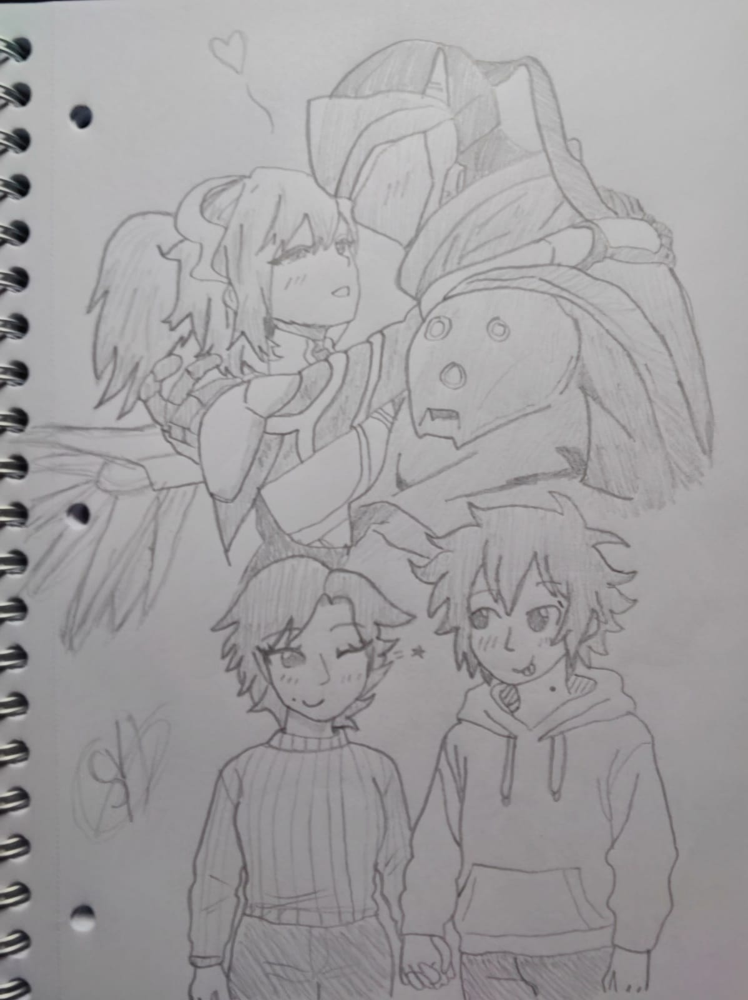

Haría tantas cosas por ti que no sé por dónde empezar, pero voy a intentarlo. Si supieras todo lo que me naces, todo lo que provocas en mí sin tocarme, sin estar cerca físicamente… entenderías que lo que siento por ti va mucho más allá de esta pantalla. Por ti, aprendería a tener paciencia, incluso en los días donde la distancia duele más de lo que puedo admitir. Esperaría con gusto cada mensaje tuyo, cada llamada, cada pequeño espacio de conexión, porque sé que cualquier momento contigo vale mil veces más que cualquier cosa. Por ti, escribiría mil textos si hace falta, solo para recordarte lo mucho que vales. Te mandaría canciones, memes, videos, cualquier cosa que logre arrancarte una sonrisa aunque no esté ahí para verla… aunque secretamente me la imagine y se me llene el alma. Por ti, cruzaría cada kilómetro sin pensarlo. Haría planes, ahorraría, me organizaría… lo que sea necesario para un día, por fin, poder abrazarte y decirte que todo esto valió la pena. No importa si tengo que esperar, porque tú haces que la espera sea hermosa. Por ti, cuidaría de mis palabras, de mis gestos, incluso de mi silencio, para que nunca te sientas sola. Estaría cuando nadie más esté, aunque sea a través de una pantalla, aunque sea con palabras en un chat. Porque aunque no pueda tocarte, sí puedo acompañarte, y eso lo haré con todo mi corazón. Por ti, celebraría tus logros como si fueran míos. Estaría en tus días buenos para aplaudirte, y en los malos para recordarte lo fuerte que eres. Sería apoyo, consuelo, risa, hombro, refugio... lo que necesites, cuando lo necesites. Por ti, me esforzaría en entender tus silencios, tus ausencias, tus pausas. Aprendería a leerte más allá de las palabras, porque sé que a veces lo más bonito está en lo que no se dice, pero se siente. Por ti, dejaría de lado el orgullo, el miedo, la inseguridad. Lucharía por lo nuestro todos los días, aunque no estemos juntos físicamente, porque tú vales el intento, la dedicación, el compromiso. Por ti, lloraría si hace falta, pero también sanaría, crecería, mejoraría… Todo lo que soy estaría dispuesto a evolucionar si eso significa ser mejor para ti. Por ti, escribiría cartas sin final, llenas de detalles, de cosas que me inspiras. Y cuando algún día esté a tu lado, leeríamos todo esto juntos, y sonreiríamos sabiendo que lo logramos. Porque sí, Moonie, por ti yo lo haría todo. Sin importar la distancia. Sin importar el tiempo. Porque tú haces que todo valga la pena. Porque tú, simplemente por existir, ya lo cambiaste todo para bien.
Por ti cruzaría cualquier distancia, aprendería cualquier cosa, me atrevería a todo. Porque hacerte feliz es mi deseo más grande 🌙
Volver